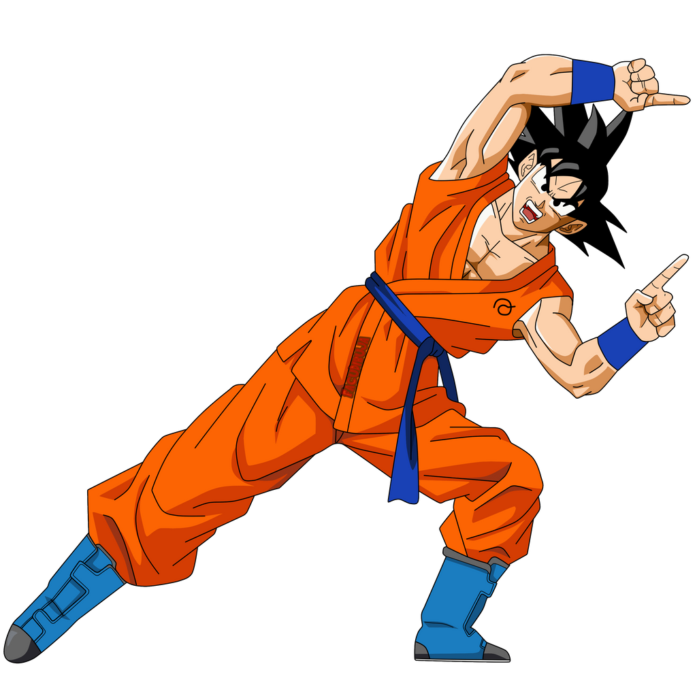
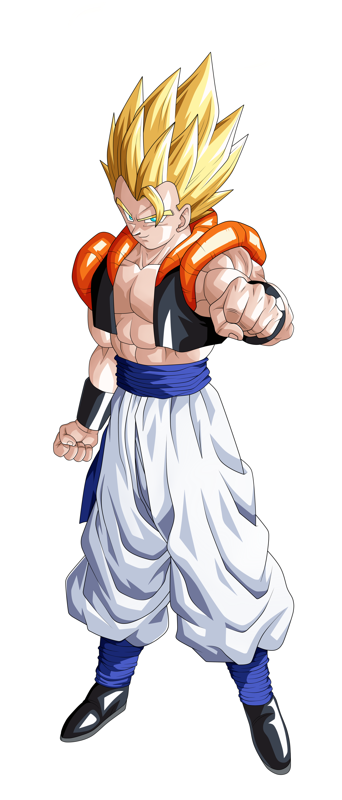
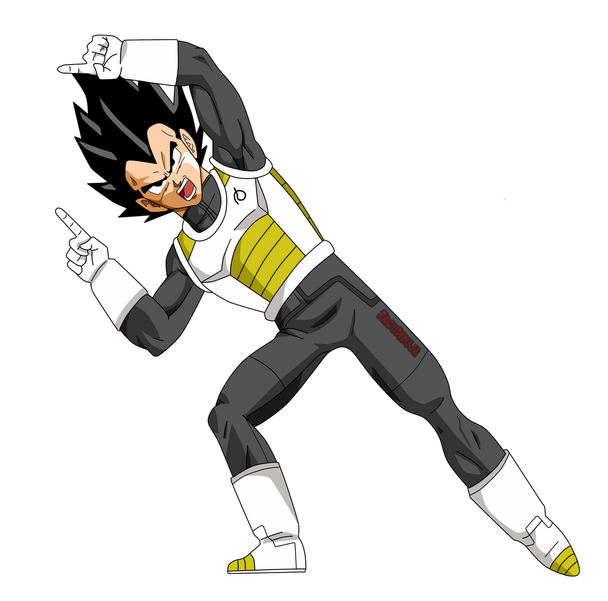

Gogeta
Gogeta es una fusión entre Goku y Vegeta, dos de los guerreros más poderosos del universo, realizada mediante
los pendientes Potara o la danza de fusión. La fusión da lugar a un guerrero con una potencia inmensa, que combina
lo mejor de ambos luchadores, tanto en habilidad como en poder.
Habilidades: Como resultado de la fusión, Gogeta posee una velocidad y fuerza increíbles,
además de una energía devastadora. Su ataque más famoso es el Final Kamehameha, que combina el Kamehameha
de Goku con el Final Flash de Vegeta.


